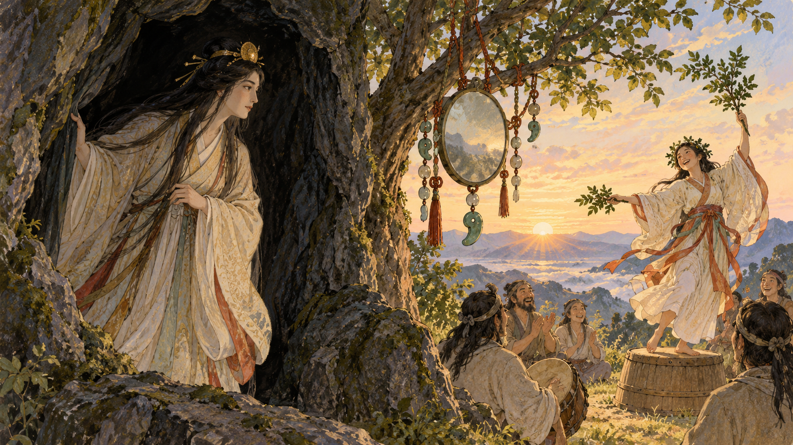
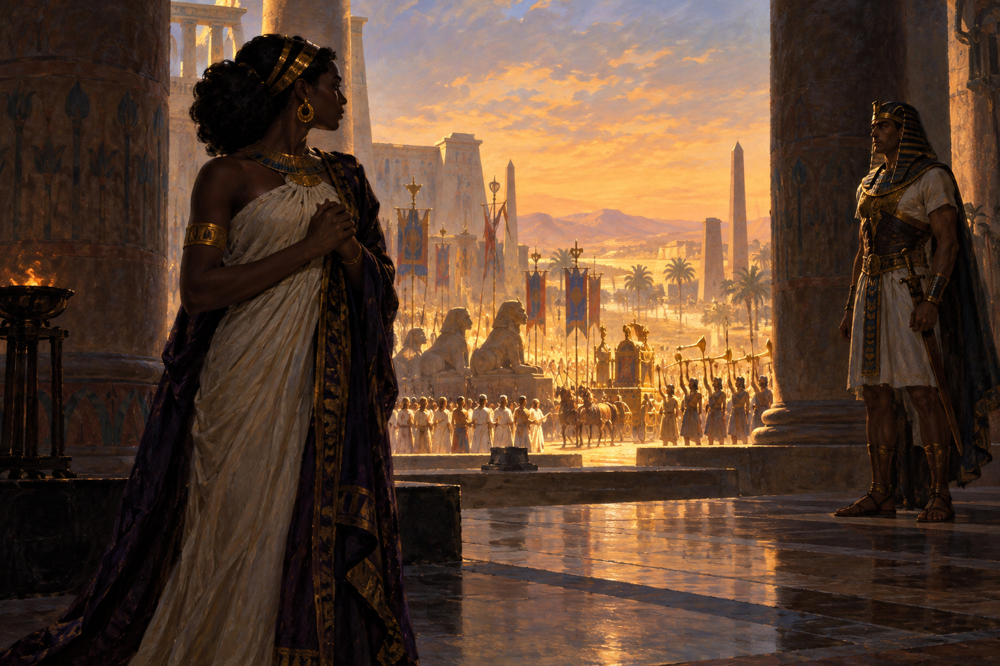
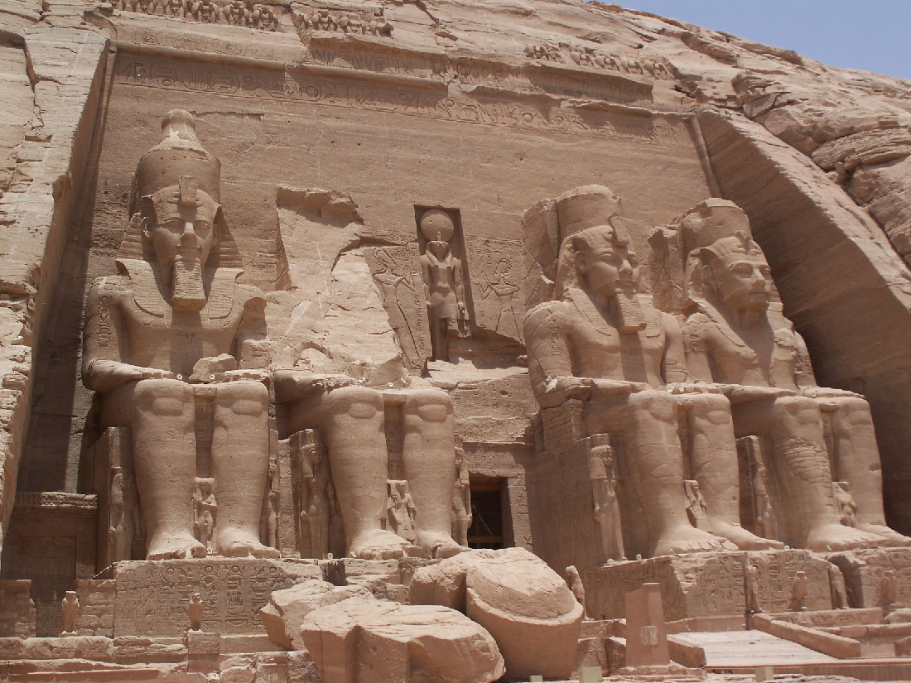
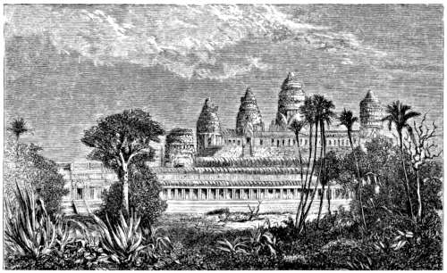
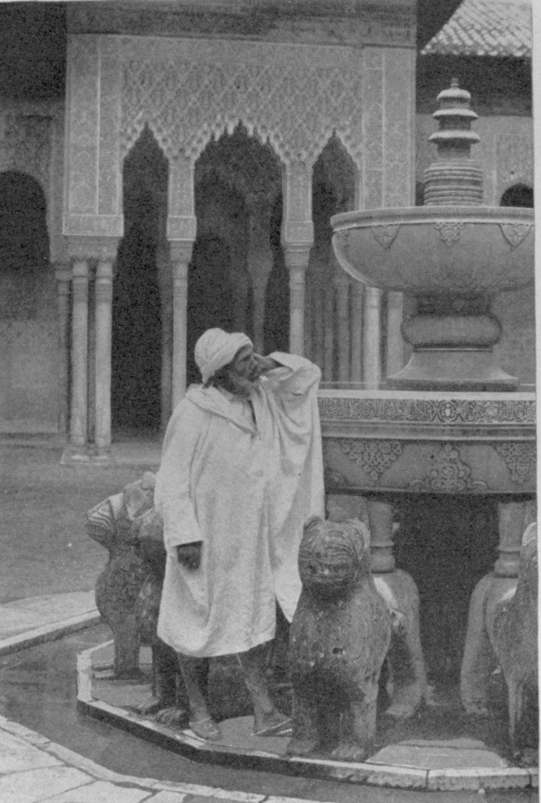
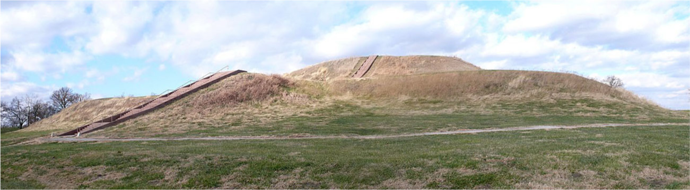
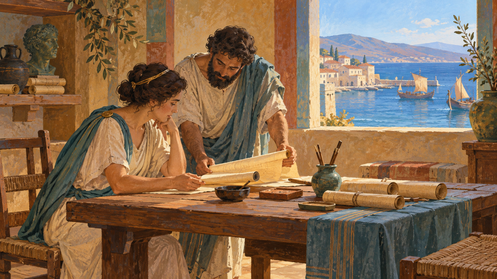
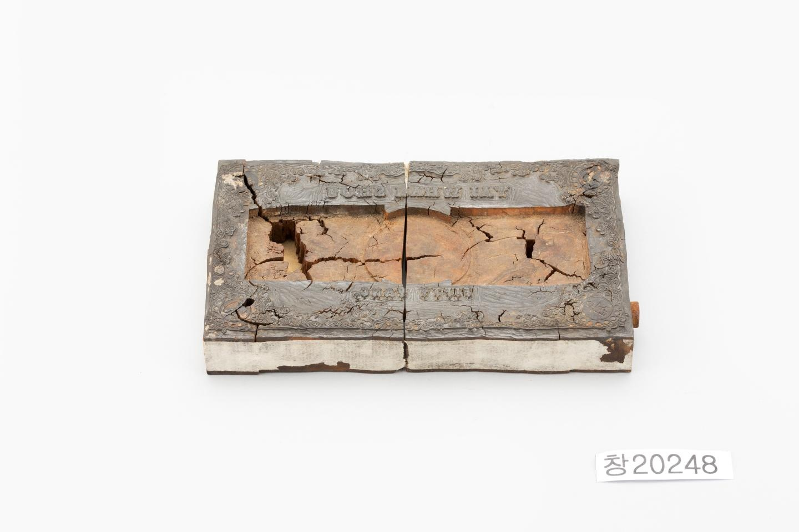

아시아대양주 / 일본 · 문화
아마테라스 — 동굴 밖에서는 왜 웃음이 터졌을까
아마테라스의 은둔과 신들의 준비, 우즈메의 춤과 호기심을 데이비스의 재화본을 따라 읽습니다.
이야기 읽기KNOWLEDGEWALK · 국가와 이야기
도시의 광장, 오래된 작품, 일상에 남은 풍습.
국가를 따라 걷고, 이야기로 조금 더 가까워집니다.
편안하게 읽고, 세상을 조금 더 깊이.
이탈리아
읽는 즐거움에, 믿을 만한 근거를 더합니다.
FOLLOW YOUR CURIOSITY
A LITTLE FURTHER

아시아대양주 / 일본 · 문화
아마테라스의 은둔과 신들의 준비, 우즈메의 춤과 호기심을 데이비스의 재화본을 따라 읽습니다.
이야기 읽기
유럽 / 이탈리아 · 문화
아이다·라다메스·암네리스의 갈등과 대표 음악을 줄거리·결말과 함께 읽습니다.
이야기 읽기아메리카 / 미국 · 역사
1773년 차 무역 문서와 후대의 편찬 기록을 바탕으로 차법·반발·보스턴 항구의 사건을 읽습니다.
이야기 읽기
중동아프리카 / 이집트 · 문화
람세스 2세의 암굴 신전과 1968년 이전으로 읽는 권력과 보존을 이야기로 살펴봅니다.
이야기 읽기
아시아대양주 / 캄보디아 · 문화
사원의 다섯 탑과 부조, 변화한 신앙과 여행기 이미지의 의미를 함께 읽습니다.
이야기 읽기
유럽 / 스페인 · 문화
그라나다의 궁정 공간과 워싱턴 어빙이 옮긴 전설을 구분해 읽기을 이야기로 살펴봅니다.
이야기 읽기
아메리카 / 미국 · 도시
몽크스 마운드와 광장·주거지의 관계를 통해 북미 원주민 도시 카호키아를 살펴봅니다.
이야기 읽기
중동아프리카 / 이집트 · 도시
무세이온과 도서관을 통해 헬레니즘 도시의 학문·언어·정치 후원을 읽습니다.
이야기 읽기
아시아대양주 / 한국 · 문화
숫자와 글자가 남은 지폐원판에서 종이돈의 뒷모습을 만납니다.
이야기 읽기